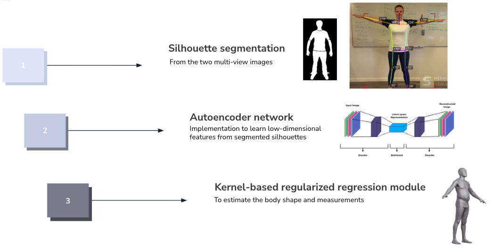

Automatic Body Measurements
POC for XR Experiences
An approach to body measurements generation from 2D images.
Overview
This project explored the state of the art in body measurements generation from 2D images, focusing on creating a proof of concept (POC) for XR experiences. The main approach was based on the published paper Estimation of 3D Body Shape and Clothing Measurements from Frontal and Side-view Images by Prabhu et al. Additionally, the human body model used in this experiment is the one proposed by Yansel Gonzalez Tejeda and Helmut A. Mayer named CALVIS.

Key Features
- Input is only two images: frontal and side-view.
- Based on open-source tools and libraries.
- State-of-the-art approach.
- Three base models: Autoencoder model for feature extraction, SMPL for 3D reconstruction, and CALVIS for measure estimation.
Tech Stack
Python, OpenCV, PyTorch, Scikit-learn, Trimesh, NumPy, Pandas, Vedo.
Impact
This POC demonstrated the feasibility of generating body measurements from 2D images, which can be used in various applications such as virtual fitting rooms, personalized clothing recommendations, and XR experiences.